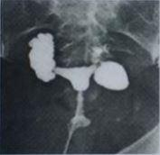
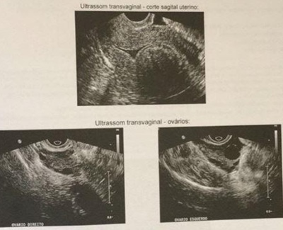
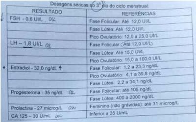

Questão 1 · Critérios para investigação · 4000127721Paciente de 32 anos, refere ciclos menstruais regulares, parou de usar método contraceptivo há dois (2) anos e não consegue gestação. O atual esposo tem 45 anos e já teve um filho em relacionamento anterior. Está correto afirmar:
A Trata-se de um casal infértil e deve iniciar a pesquisa de infertilidade conjugal
B Trata-se de uma subfertilidade e deve aguardar cinco anos.
C A paciente tem esterilidade.
D A pesquisa está contra-indicada porque a paciente ainda não tem 35 anos de idade.
Questão 2 · Critérios para investigação · Propedêutica do casal inf értil · Etiologia · 4000125777Casal procura ambulatório de infertilidade para tratamento. Homem tem 38 anos, e mulher, 35. Ambos são hígidos, não fumam, não bebem e não usam drogas. Tentam gravidez há 4 anos, com relações sexuais 2 vezes por semana, sem sucesso. Negam abortos ou filhos de outros relacionamentos. Sobre o caso, assinale a opção incorreta.
A Você solicita hormônios femininos, US transvaginal para a mulher e espermogramapara o homem.
B FSH elevado pode representar baixa reserva ovariana e indica técnica de altacomplexidade.
C Pode-se realizar coito programado se a histerossalpingografia e o espermogramaforem normais.
D Algumas das indicações de alta complexidade são: necessidade de diagnóstico pré-implantacional, idade feminina superior a 40 anos, uma tuba obstruída, fator masculino moderado a grave etc.
E Em casos de esterilidade sem causa aparente (ESCA), pode haver fator peritonealenvolvido, sendo que a principal patologia implicada no processo é a endometriose.
Questão 3 · Fator uterino · 4000124366Paciente de 32 anos, nuligesta, com quadro de infertilidade conjugal há três anos. A propedêutica revelou presença de mioma submucoso de 3 cm. O marido tem 35 anos e dois filhos de relacionamento anterior. A conduta adequada é:
A Miomectomia histeroscópica e solicitar espermograma.
B Tratamento com análogos do GnRH por seis meses.
C Miomectomia laparoscópica e solicitar espermograma.
D Miomectomia por laparotomia.
E Se prova de Cotte positiva, pode induzir ovulação.
Questão 4 · FSH e estradiol · 4000114446O valor de FSH elevado no terceiro dia do ciclo menstrual é sugestivo de
A Síndrome dos ovários policísticos.
B Hiperandrogenismo.
C baixa reserva folicular.
D puberdade tardia.
Questão 5 · Ovulação · 4000114136Teste que não serve para diagnosticar ovulação:
A Teste da progesterona.
B Dosagem da progesterona sérica.
C Gráfico de temperatura basal.
D Ultrassom evidenciando presença de corpo lúteo.
Questão 6 · Indução de ovulação · 4000109000Paciente de 34 anos apresenta ciclos menstruais com intervalos longos, próximo a 40 dias, acne moderada e IMC de 28. Nuligesta, tenta engravidar há 1 ano, sem sucesso. Opta-se por induzir sua ovulação com inibidor de aromatase no início do ciclo menstrual. Qual a ação deste medicamento associada à maior fertilização?
A Liberar o folículo antral.
B Diminuir a produção de prolactina da adeno-hipófise.
C Reduzir a produção estrogênica ovariana e periférica.
D Aumentar o feedback positivo estrogênico hipotalâmico.
Questão 7 · Propedêutica do casal inf értil · 4000076019Paciente com 37 anos, nuligesta, há 9 meses tentando engravidar, apresenta ciclos menstruais regulares e história de apendicectomia há 10 anos. Cônjuge, com 35 anos, já tem 2 lhos, de 3 e 5 anos de um relacionamento anterior. Refere relações sexuais 3x/semana. Considerando a definição de infertilidade e os exames propedêuticos indispensáveis para esse casal, respectivamente, pode- se afirmar que:
A não é um casal infértil. Deve ser realizada monitorização da ovulação por ultrassonografia até que se completem pelo menos 12 meses sem gravidez
B trata-se de um casal infértil. É indispensável a realização de histeroscopia na mulher, sendo o espermograma dispensado no homem
C não é um casal infértil. Apenas orientar o momento adequado da relação sexual até que se completem 12 meses de tentativas sem sucesso para gravidez
D trata-se de um casal infértil. É indispensável a realização de uma histerossalpingografia na mulher e de espermograma no homem
Questão 8 · Indução de ovulação · 4000075390O citrato de clomifênio induz a ovulação por ação:
A Na hipófise anterior
B No ovário
C No hipotálamo
D Na pineal
E Na hipófise posterior
Questão 9 · Etiologia · 4000069094São fatores de risco para infertilidade, exceto:
A Tabagismo
B Idade
C Obesidade
D Doenças sexualmente transmissíveis
E Diabete tipo 2
Questão 10 · Propedêutica do casal inf értil · 4000052357Um casal, ambos com 27 anos, deu início ao processo para investigação de infertilidade primária. Na consulta, a mulher informou que as menstruações eram irregulares e com ciclos que variavam de 26 a 36 dias. Mantêm em média 2 a 3 relações sexuais por semana. Apresentava exame ginecológico normal e hirsutismo leve no exame físico geral. Além disso: colpocitologia cervicovaginal e dosagens de prolactina, FSH, testosterona, sulfato de deidroepiandrosterona e 17-alfa- hidroxiprogesterona normais. Ultrassonografia transvaginal e espermograma sem anormalidades. A conduta é:
A Repetir o espermograma.
B Realizar histeroscopia diagnóstica.
C Induzir a ovulação com acetato de clomifeno.
D Prescrever metformina.
E Solicitar histerossalpingografia.
Questão 11 · Código de Ética Médica CEM · 4000051557Segundo o Código de ética, assinale a opção CORRETA.
A A Medicina, em determinadas circunstâncias, pode ser exercida como comércio.
B É vedado ao médico internar e assistir seus pacientes em hospitais privados com caráter filantrópico ou não, caso não faça parte dos seus corpos clínicos.
C É vedado ao médico deixar de garantir ao paciente o exercício do direito de decidir livremente sobre sua pessoa ou seu bem-estar.
D O trabalho do médico pode ser explorado por terceiros com objetivos de lucro, finalidade política ou religiosa.
E É vedado ao médico apontar falhas em normas, contratos e práticas internas das instituições em que trabalhe a fim de não prejudicar o exercício da profissão.
Questão 12 · Histerossalpingograf ia · 4000046169Qual exame pode visualizar a permeabilidade das tubas uterinas?
A Histeroscopia.
B Histerossalpingografia.
C Laparoscopia.
D Salpingostomia.
E Ultrassonografia transvaginal.
Questão 13 · Curva de temperatura basal · 4000033035O efeito termogênico do corpo lúteo pode ser usado clinicamente na avaliação da ovulação através da curva de temperatura basal, por apresentar:
A Efeitos hipotalâmicos da progesterona.
B Liberação de catecolaminas na região central.
C Ativação de prostaglandinas endometriais.
D Todas as anteriores.
Questão 14 · Fator tuboperitoneal · 4000031832Qual é a causa mais comum de infertilidade por fator tuboperitoneal?
A malformação uterina
B endometriose
C doença inflamatória pélvica
D tuberculose genital
Questão 15 · Falência ovariana prematura · Fator ovulatório · 4000030878Um casal procura a clínica de reprodução humana após 4 anos tentando engravidar sem sucesso. A mulher tem 35 anos e o homem 43 anos, sem comorbidades. Ela refere que está sem menstruar há 9 meses. Os exames solicitados mostraram FSH=77 UI/mL; LH=42 UI/mL; Prolactina=16 ng/mL; biópsia ovariana com ausência de folículos. Espermograma do marido estava normal. Qual seria o diagnóstico e tratamento proposto?
A Falência ovariana precoce e inseminação intrauterina.
B Falência ovariana precoce e transferência de oócitos de doadora.
C Anovulação crônica e indução com gonadotrofinas.
D Anovulação crônica e indução com citrato de clomifeno.
Questão 16 · Propedêutica do casal inf értil · 4000024143Paciente de 39 anos, com infertilidade primária há 4 anos. Qual dos seguintes exames não deve ser solicitado como investigação básica inicial?
A Espermograma.
B Laparoscopia diagnóstica.
C Histerossalpingografia.
D Ultrassom endovaginal.
E FSH no terceiro dia do ciclo.
Questão 17 · Reserva ovariana · 4000011676O hormônio anti-mulleriano (AMH) é reconhecido como importante marcador da reserva ovariana. Qual das seguintes situações NÃO altera seu nível sérico?
A Número de folículos antrais
B Níveis de Vitamina D
C Uso prolongado contraceptivos orais
D Volume ovariano
E Fase do ciclo menstrual
Questão 18 · Propedêutica do casal inf értil · Etiologia · 4000004408A infertilidade é definida pela incapacidade de engravidar após um ano de atividade sexual desprotegida e frequente. Assinale a alternativa CORRETA sobre infertilidade:
A A endometriose sempre causa quadro de infertilidade.
B Homens que já possuem filhos, independentemente da idade, não necessitam realizar espermograma para investigação da infertilidade conjugal.
C Incompetência istmo cervical é uma causa de infertilidade primária.
D A síndrome dos ovários policísticos é uma causa de infertilidade por fator uterino.
E A bactéria Clamydia trachomatis pode provocar obstrução tubária.
Questão 19 · Ética em reprodução humana · 4000125601As técnicas de reprodução assistida sofreram algumas mudanças e avanços importantes após a Resolução CFM n° 2.168/2017. Com base nesta resolução podemos citar, EXCETO:
A Ficou permitido a preservação de oócitos em pacientes oncológicas, ampliando as oportunidades de planejamento reprodutivo neste grupo de pacientes.
B A doação de óvulos pode ser realizada de forma espontânea e altruísta, isto é, mulheres que desejam doar seus óvulos desinteressadamente, para o benefício de outras pessoas, desde que não envolva caráter lucrativo ou comercial.
C Com relação ao útero de substituição, agora filha, sobrinha e enteada também podem ceder temporariamente seus úteros.
D O descarte de embriões, antes determinado em cinco anos, passou para três anos.
E Mulheres com mais de 50 anos, em situações de exceção justificadas pelo médico e conscientes dos riscos, também podem solicitar a utilização de técnicas de reprodução assistida.
Questão 20 · Indução de ovulação · 4000121389Um casal procurou o serviço de endocrinologia ginecológica com queixa de infertilidade primária há um ano. Ela, com 35 anos de idade, queixava-se de irregularidade menstrual, negava doenças, era nuligesta e não tinha antecedentes familiares relevantes. Trouxe ultrassonogra a transvaginal com o útero em anteverso exão, ovário direito e esquerdo com os volumes, respectivamente, de 15 mL e 16 mL, e múltiplos folículos antrais, sem presença de folículo dominante. Mostrou histerossalpingogra a sem alterações. Além disso, apresentou exames de sangue com os seguintes resultados: TSH, testosterona total, sulfato de dehidroepiandrostenediona e 17 hidroxiprogesterona normais e FSH de 6 mUi/dl (normal até 12 mUI/dl). O exame de progesterona era compatível com fase folicular do ciclo. Ele, com 38 anos de idade, sem queixas, negou doenças e antecedentes familiares e mostrou espermograma sem alterações. O médico, após avaliação dos exames, realizou a prescrição de citrato de clomifeno. Com base nesse caso hipotético, assinale a alternativa correta.
A O uso do citrato de clomifeno na paciente é associado a um risco elevado de hiperestímulo ovariano.
B Trata-se de um modulador seletivo dos receptores de estrogênio que cursa com o aumento do FSH ao causar a diminuição da pulsatilidade do GnRH, devido ao bloqueio do feedback negativo hipotalâmico do estrogênio circulante.
C A eficácia do uso do citrato de clomifeno é semelhante à do uso de gonadotropina na paciente, entretanto o citrato de clomifeno possui um maior risco de gestações gemelares.
D Classicamente, utiliza-se o remédio durante cinco dias, do 10.° ao 14.° ciclo menstrual.
E As taxas de sucesso do tratamento com o citrato de clomifeno são inferiores quando a paciente é obesa.
Questão 21 · Quadro clínico · Fator ovulatório · 4000116030S.S.G., 23 anos, casada há 2 anos, tenta engravidar há 1,5 ano. Menarca 14 anos, sempre teve ciclos regulares, mas há 1 ano suas menstruações estão irregulares, atrasando até 2 meses. Teve a última menstruação há 2 meses e recentemente fez o teste de gravidez, que foi negativo. É nuligesta, refere que “sempre foi gordinha”, mas engordou mais ainda desde que se casou. Não tem nenhum antecedente pessoal relevante, nunca foi operada e não usa nenhum medicamento. Seu esposo tem 35 anos, já foi casado anteriormente e teve 1 lho. EF – PA 110/70 mm Hg, Peso 111.500Kg e altura 1,60m (IMC 43,55); nada de relevante na ausculta cardíaca e pulmonar; o abdome é globoso com algumas víbices. Não há visceromegalias. Ao exame ginecológico e mamário, os únicos achados significativos são hipercromia com liqueni cação aveludada simétrica de ambas as regiões crurais e raiz de coxas. Ao especular há mácula rubra grande que ocupa quase todo o colo uterino. Ela trouxe o espermograma de seu esposo que revelou astenospermia (6% de espermatozoides com movimento linear progressivo e 65% de espermatozoides mortos, no total de 40 milhões de espermatozoide por ml). Assinale a alternativa CORRETA sobre essa paciente:
A Caso a paciente não seja submetida a nenhuma intervenção terapêutica e mantenha seu quadro clínico atual, em longo prazo ela poderá ser considerada como uma paciente de risco para o desenvolvimento de câncer de endométrio.
B A despeito do quadro de obesidade grau III que a paciente apresenta, a indução da gravidez deve ser iniciada imediatamente, porque o ideal é que ela engravide já, reduzindo seu risco obstétrico.
C A lesão dermatológica genital (‘hipercromia aveludada’) é determinada pelo vírus HPV, que pode ter sido o fator determinante da esterilidade conjugal.
D A paciente deve ser desencorajada a tratar a esterilidade, pois o fator determinante neste caso é masculino. Dessa forma, somente devemos iniciar a abordagem desta paciente após o espermograma estar em ordem.
Questão 22 · Exames complementares · 4000103103Mulher com 32 anos, em pesquisa e tratamento de infertilidade, foi orientada a fazer um teste na urina que indica a ocorrência da provável ovulação em, aproximadamente, 24 horas. Qual é o hormônio que é detectado nesse teste?
A Beta-hCG.
B LH.
C FSH.
D Estradiol.
Questão 23 · Fator tuboperitoneal · 4000085238Paciente de 28 anos trouxe à consulta a imagem abaixo. O médico informou ser necessário realizar Fertilização In Vitro (FIV) precedida de salpingectomia bilateral para aumentar as chances de sucesso da FIV. A paciente questionou se a retirada das tubas uterinas não a tornaria ainda mais infértil. A necessidade desse procedimento baseia-se no resultado do exame, que demonstra:

A Ovários policísticos.
B tubas uterinas com fimose tubária.
C Hidrossalpinge bilateral.
D Útero bicorno.
E Bloqueio de alças, sendo necessária a lise das aderências.
Questão 24 · Reserva ovariana · 4000078951O ciclo menstrual é um fenômeno biológico feminino de caráter cíclico, que ocorre como resultado direto de variações das concentrações hormonais secretadas pelo eixo hipotálamo-hipó se-gonadal. Dura, em média, 28 dias e pode ser dividido em três fases: folicular, ovulatória e lútea. A reserva folicular ovariana pode ser avaliada no 3º dia do ciclo, a partir da dosagem sérica de
A estradiol.
B LH.
C FSH.
D progesterona.
Questão 25 · Propedêutica do casal inf értil · 4000078885Mulher de 34 anos, com infertilidade primária, casada há cinco anos, apresenta ciclos menstruais regulares com dismenorreia progressiva associada a dispareunia. Refere que os sintomas vêm piorando ao longo de quatro anos, quando suspendeu a pílula anticoncepcional combinada monofásica, que usava desde os 22 anos. Marido com espermograma normal. Submetida a histerossalpingogra a com Cotte positivo bilateralmente e tuba esquerda xa e elevada. Exame ginecológico evidenciou nódulo endurecido no fundo de saco posterior, útero retrovertido e fixo. Qual melhor conduta?
A Videolaparoscopia.
B Video-histeroscopia.
C Gosserrelina por seis meses.
D Pílula anticoncepcional por um ano.
E Biópsia, via vaginal, do nódulo de fundo de saco posterior com agulha grossa.
Questão 26 · Reserva ovariana · 4000059891A reserva ovariana nos mostra a capacidade do ovário de responder aos estímulos hormonais, sejam endógenos ou exógenos. Assim, é correto afirmar:
A A ecografia pélvica transvaginal seriada com contagem de folículos antrais é suficiente para mostrar a falência ovariana.
B As dosagens de estradiol, FSH e LH no 3° dia do ciclo são suficientes para o diagnóstico de reserva ovariana diminuída.
C Níveis do hormônio antimulleriano acima de 2,5 demonstram reserva ovariana diminuída.
D Com a dosagem do hormônio antimulleriano, podemos prever a idade com que a paciente estará na menopausa.
E As dosagens de FSH no 3° dia do ciclo, estradiol no 18° dia e LH no 24° dia são suficientes para o diagnóstico de reserva ovariana diminuída.
Questão 27 · Propedêutica do casal inf értil · 4000059874Paciente de 34 anos procura atendimento na unidade básica de saúde por desejar gestação. É casada há 1 ano e não usa métodos contraceptivos desde então. É saudável, refere exames de rotina normais e informa ciclos de 28-42 dias, com uxo menstrual normal e sem dismenorreia. Fuma 10 cigarros/dia há 8 anos. O parceiro tem 39 anos, é também hígido e não tem lhos de relacionamentos anteriores. Ao exame físico, não se observa nenhuma alteração ginecológica. PA: 125/77 mmHg, IMC: 26,3 kg/m², Índice de Ferriman-Gallwey: 5. Com relação a esse caso, deve-se:
A Prescrever ácido fólico, estimular interrupção do tabagismo, orientar o casal a manter uma regularidade de relações sexuais e tranquilizá-los sobre o quadro, uma vez que não se observam alterações nos exames de rotina e exame físico.
B Prescrever ácido fólico e iniciar metformina e indução com citrato de clomifeno, uma vez que o quadro sugere síndrome dos ovários policísticos.
C Prescrever ácido fólico, solicitar espermograma e iniciar indução com citrato de clomifeno, uma vez que o quadro sugere síndrome dos ovários policísticos.
D Prescrever ácido fólico e solicitar ecografia transvaginal, histerossalpingografia e videolaparoscopia.
E Prescrever ácido fólico e solicitar histerossalpingografia, FSH, espermograma e ecografia transvaginal seriada.
Questão 28 · Torção anexial · Indução de ovulação · 4000038667Mulher com diagnóstico de infertilidade de causa ovariana, 27 anos, nuligesta, utilizando citrato de clomifeno há 5 dias, dá entrada no pronto atendimento ginecológico referindo dor importante em fossa ilíaca esquerda, sudorese, palidez cutânea e pressão arterial de 90 x 60 mmHg. Ao exame físico apresenta abdome muito doloroso à palpação com descompressão brusca dolorosa. Dos seguintes diagnósticos, o mais provável é
A diverticulite.
B apendicite.
C torção de ovário.
D aborto retido.
Questão 29 · Fator tuboperitoneal · 4000031735Uma paciente portadora de infertilidade com história pregressa de doença inflamatória pélvica, foi submetida a histerossalpingogra a que mostrou obstrução tubária bilateral. Foi submetida a laparoscopia que evidenciou hidrossalpinge bilateral. Em relação ao quadro clínico descrito acima, assinale o tratamento indicado para a infertilidade:
A Salpingoplastia e indução da ovulação com coito programado.
B Salpingectomia e fertilização in vitro.
C Salpingoplastia e inseminação intra-uterina.
D Antibioticoterapia venosa e inseminação intra-uterina.
Questão 30 · Falência ovariana prematura · Roteiro diagnóstico · Propedêutica do casal inf értil · 4000010894Uma paciente de 36 anos procura o consultório ginecológico, pois está tentando gestar há oito meses sem sucesso. A última menstruação ocorreu há um ano, desde que suspendeu o uso de anticoncepcional oral. Realizou exames para investigação. Nos exames laboratoriais, notaram-se as seguintes alterações: FSH 96 mUI/ml e estradiol < 11 mUI/ml (valores de referência normais, FSH < 10 mUI/ml e estradiol > 60 mUI/ml). Acerca desse caso clínico, quanto ao diagnóstico mais provável, assinale a alternativa correta.
A Bloqueio menstrual por uso prolongado de anticoncepcional.
B Hipogonadismo hipergonadotrófico em razão de falência ovariana prematura.
C Hipogonadismo hipogonadotrófico hipotalâmico.
D Anovulação crônica, provavelmente por síndrome dos ovários micropolicísticos.
E Impossível de ser definido com esses dados. É necessário que seja feita a dosagem de LH e de progesterona.
Questão 31 · Histerossalpingograf ia · 4000007072No exame de histerossalpingografia, uma prova de Cottè negativa significa
A boa dispersão do contraste através das trompas.
B presença de mioma uterino distorcendo a cavidade endometrial.
C obstrução tubária.
D infertilidade de causa espermática.
Questão 32 · Fator ovulatório · 4000003605Paciente 32 anos, foi ao consultório pois está tentando engravidar há 2 anos. Assintomática. No dia da consulta estava no 24º dia do ciclo. O exame ginecológico estava normal. No mesmo dia, o ginecologista realizou uma biópsia endometrial cujo diagóstico foi: endométrio proliferativo. A hipótese diagnóstica é:
A Ciclo anovulatório
B Hiperplasia endometrial
C Infertilidade de origem masculina
D Sinéquia uterina
Questão 33 · Ovulação · 4000002626Dos métodos citados abaixo, aquele que não serve para predição de período fértil é:
A Detecção de LH na urina.
B Curva de temperatura basal.
C Padrão de muco cervical.
D Dosagem de progesterona.
Questão 34 · Fertilização in vitro · 4000125968São indicações para o uso de banco de sêmen em mulheres que irão se submeter à FIV/ICSI, EXCETO:
A azoospermia excretora.
B azoospermia secretora.
C doença grave de transmissão sexual.
D incompatibilidade Rh com isoimunização prévia.
E mulheres sem parceiro.
Questão 35 · Conceitos iniciais · 4000121239Uma mulher com 32 anos e seu esposo com 33 procuram o ginecologista da UBS com queixa de que estão casados há 5 anos, sendo que evitaram gravidez por 4 anos com contraceptivo oral, e estão há seis meses tentando engravidar, mas não conseguem. Frente a esses dados, é correto afirmar que:
A em se tratando de um casal normal, isto é, sem nenhuma afecção, apresentam uma taxa de fertilidade de 20% ao mês.
B se trata de infertilidade primária, pois o casal nunca teve nenhuma gestação.
C o fator masculino, nos casos de infertilidade, representa, como fator isolado, 60% das causas.
D o fator ovulatório, como causa feminina isolada, representa o maior contingente dos casos, atingindo a cifra de 80%.
E se existir endometriose como causa de infertilidade, sua expressão é restrita aos fatores tuboperitoneais (alterações anatômicas).
Questão 36 · Propedêutica do casal inf értil · Etiologia · 4000117514Um casal procurou o serviço de infertilidade com a queixa de não estarem conseguindo engravidar há três anos. Ela tem 34 anos de idade, nega uso de medicamentos, refere diagnóstico de síndrome dos ovários policísticos e, devido a isso, irregularidade menstrual, cando meses sem menstruar, e mostra histerossalpingogra a sem alterações e ultrassonogra a com a presença de mioma subseroso em região fúndica uterina com 2 cm em seu maior diâmetro. Ele tem 36 anos de idade e nega doenças ou cirurgias, mostrando espermograma com os seguintes achados pertinentes: concentração por ml de 8 milhões/ml (normal "maior ou igual a" 15 milhões/ml), motilidade progressiva de 15% (normal "maior ou igual a" 32%); e morfologia de 1% (normal "maior ou igual a" 4%). Considerando essa situação hipotética, assinale a alternativa que apresenta todos os fatores que provavelmente estejam acarretando a infertilidade do casal:
A Anovulação crônica, miomatose uterina e oligoastenoteratozoospermia.
B Miomatose uterina e oligoastenoteratozoospermia.
C Anovulação crônica e azoospermia.
D Anovulação crônica e oligoastenoteratozoospermia.
E Fator tuboperitoneal e oligoteratozoospermia.
Questão 37 · Tratamento · Propedêutica do casal inf értil · 4000077819Um casal procura atendimento médico, pois estão casados há 5 anos e nunca conseguiram engravidar. Cecília tem 30 anos e Paulo 34 anos, ambos sem ihos. Cecília pesa 86 kg altura de 1.67 m, ciclos menstruais regulares com 28 dias, nega cólica. Exame físico sem alterações, exceto pelo sobrepeso. USG Transvaginal com útero medindo 70x50x37 mm, ovários visualizados e sem alterações. Histerossalpingogra a com Cotte negativo bilateralmente. Espermograma com motilidade A+B 60%, 45 milhões de espermatozóides no ejaculado e com morfologia preservada. Marque a opção correta sobre o tipo de infertilidade do casal e sua correção:
A Trata-se de infertilidade por fator tubário, sendo a inseminação uterina indicada nesse caso.
B Infertilidade pelo fator masculino. Pesquisar varicocele ou hipogonadismo masculino.
C Infertilidade por fator tubário. Indicar Fertilização in vitro ou laparoscopia para recanalização tubária.
D Infertilidade por fator masculino e tubário. Indicar fertilização in vitro.
Questão 38 · Ética em reprodução humana · Conceitos iniciais · Etiologia · 4000067477A respeito de infertilidade conjugal, considere as seguintes afirmativas: 1. Segundo a OMS, os fatores femininos respondem por aproximadamente 37% dos casos de infertilidade; 2. A frequência de infertilidade primária depende da idade da mulher, podendo ser próxima de 10% em mulheres com idade até 34 anos e de 30% em mulheres entre 40 e 44 anos; 3. Aproximadamente 90% dos casais conseguem chegar a uma gestação no período de até um ano; 4. A criopreservação de gametas é permitida, limitada por um período de 5 anos. Assinale a alternativa correta.
A Somente as afirmativas 1 e 3 são verdadeiras.
B Somente as afirmativas 2 e 4 são verdadeiras.
C Somente as afirmativas 3 e 4 são verdadeiras.
D Somente as afirmativas 1, 2 e 3 são verdadeiras.
E Somente as afirmativas 1, 2 e 4 são verdadeiras.
Questão 39 · Ética em reprodução humana · 4000067433A respeito de reprodução assistida, assinale a alternativa CORRETA:
A De acordo com as normas do Conselho Federal de Medicina (Resolução 2.121/2015), os embriões criopreservados podem ser descartados após cinco anos se o casal não desejar mais gestar.
B O sigilo sobre a identidade dos doadores de gametas e embriões, bem como dos receptores, será sempre mantida, exceto em situações especiais.
C A idade máxima para procedimentos de reprodução assistida para mulheres é de 45 anos.
D Em caso de gravidez múltipla, decorrente do uso de técnicas de reprodução assistida, é permitida a utilização de procedimentos que visem a redução embrionária desde que realizada até a oitava semana de gestação.
E Em caso de gravidez múltipla, decorrente do uso de técnicas de reprodução assistida, é permitida a utilização de procedimentos que visem a redução embrionária desde que realizada até a quarta semana de gestação.
Questão 40 · Tratamento · 4000046886DDA, 39 anos, com ciclos regulares de 28 dias e 3 dias de uxo, há 3 anos tentando engravidar, apresenta os seguintes exames no ambulatório de infertilidade. Ultrassonogra a pélvica transvaginal – útero em anteverso exão com volume de 76cc, ovário direito 7,8cc, ovário esquerdo 5,6cc. Dosagens hormonais colhidas no 3o dia menstrual: FSH-11,1,LH 8,5, Estradiol 50, Prolactina 20. Anti Mulleriano 0,55, Histerossalpingogra a – cavidade uterina normal, trompas opaci cadas até porção distal, porém sem difusão do contraste para pelve. Marido com o seguinte espermograma – volume 3,0ml, número – 20 milhões de espermatozoides/ml, mobilidade progressiva 35%, morfologia de Kriger 8%. A conduta mais apropriada é
A estimular ovulação, realizar coleta dos óvulos e espermatozoides para fertilização “in vitro” e transferência dos gametas para o útero.
B estimular ovulação, coletar dos espermatozoides, realizar o seu preparo e realizar inseminação intrauterina.
C estimular ovulação e, no período fértil, indicar coito programado.
D indicar vídeo laparosocopia.
E indicar vídeo histeroscopia.
Questão 41 · Histerossalpingograf ia · 4000044265Sobre a histerossalpingografia é incorreto, exceto:
A Teste positivo, ausência de trompas
B Teste negativo, presença de trompas
C Teste positivo, permeabilidade tubárea
D Teste negativo, permeabilidade tubárea
E Teste negativo, houve passagem do contraste.
Questão 42 · Reserva ovariana · 4000023804Alguns exames hormonais são utilizados para diagnóstico de baixa da reserva ovariana e para predizer a ocorrência de menopausa. Assim:
A O exame do nível de hormônio folículo estimulante (FSH) é realizado no terceiro dia do ciclo menstrual, reflete a capacidade funcional do hipotálamo e da hipófise que, na proximidade da menopausa, apresenta FSH acima de 2 mUI/ml.
B A avaliação do estradiol sanguíneo no terceiro dia do ciclo menstrual também podefazer a predição de menopausa, quando os níveis se aproximam de 40 mUI/ml amenopausa ocorre em menos de dois meses.
C O hormônio antimülleriano (AMH) é considerado como o melhor marcador de reserva ovariana e exames com valores inferiores a 1 mg/ml são indicadores de baixa reserva ovariana e sugerem a ocorrência da menopausa em até cinco anos.
D O volume ovariano diminuído à ultrassonografia e a presença de 6 a 12 folículos antrais são indicativos de baixa reserva ovariana e de ocorrência de menopausa em, no máximo, um ano.
Questão 43 · Propedêutica do casal inf értil · Exames complementares · 4000002300Na avaliação do casal infértil, o Teste Pós-Coito deve ser realizado entre
A 24 e 36 horas após a relação sexual.
B 48 e 72 horas após a relação sexual.
C 72 e 96 horas após a relação sexual.
D 2 e 6 horas após a relação sexual.
Questão 44 · Hormônio antimulleriano · 4000127966Na avaliação do casal infértil, há uma evidente relação inversa entre a idade da mulher e fertilidade. Em um estudo clássico entre os hutteristas, comunidade anabatista que evita contracepção, após 34, 40 e 45 anos, a taxa de infertilidade foi de 11%, 33% e 87%, respectivamente. A infertilidade relacionada com a idade está mais ligada à perda de oócitos viáveis. O hormônio antimülleriano (AMH) é o fator circulante mais recentemente usado como preditor da reserva ovariana (La Marca, 2009). Em relação à avaliação da reserva ovariana, é correto afirmar que o AMH:
A É expresso no ovário, sendo grande a expressão nos folículos maiores.
B Também é expresso pelas células da teca dos pequenos folículos pré-antrais.
C Tem papel irrelevante no recrutamento do folículo dominante.
D É expresso pelas células da granulosa dos pequenos folículos pré-antrais.
Questão 45 · Isquemia Colônica · 4000124954Qual o segmento mais frequentemente envolvido em paciente com isquemia colônica segmentar?
A Cólon descendente.
B Sigmoide.
C Flexura hepática.
D Flexura esplênica.
E Ceco.
Questão 46 · Indução de ovulação · 4000103720Mulher de 30 anos encontra-se em tratamento para gravidez e deverá ser submetida a inseminação intrauterina. Recebeu medicação para estimular o desenvolvimento do folículo ovariano, que apresenta 20 mm do diâmetro ao ultrassom. Qual dos hormônios abaixo é o mais indicado para induzir a ovulação?
A Progesterona.
B FSH.
C Estrogênio.
D hCG.
Questão 47 · Fator uterino · 4000103520Mulher de 32 anos tem desejo reprodutivo. Há 8 meses apresentou gestação seguida de aborto espontâneo com 7 semanas, sem necessidade de curetagem. Desde este evento, não faz uso de método contraceptivo e apresenta ciclos menstruais regulares com duração de 4 dias, intervalo de 30 dias e uxo aumentado. Exame ginecológico: Genitais externos normais; - Especular - conteúdo vaginal habitual, colo epitelizado; Toque vaginal - útero em anteverso exão, regular, não doloroso à mobilização, volume habitual. Realiza os seguintes exames: Espermograma do parceiro: normal. Considerando o desejo reprodutivo e as informações clínicas, ultrassonográficas e laboratoriais, é necessário realizar:


A Tratamento de síndrome dos ovários policísticos.
B Suplementação de progesterona.
C Laparoscopia diagnóstica.
D Histeroscopia cirúrgica.
Questão 48 · Reserva ovariana · 4000086393Paciente de 37 anos está tentando engravidar, sem sucesso, há três anos. O espermograma do parceiro não apresenta alteração. O método que avalia a reserva ovariana neste caso é:
A Dosagem sérica de inibina B no 10º dia.
B Medida do Hormônio Foliculoestimulante (FSH) basal no 3º dia do ciclo.
C Pico de Hormônio Luteinizante (LH) urinário no meio do ciclo.
D USG transvaginal seriada.
Questão 49 · Indução de ovulação · 4000062941Paciente com 28 anos de idade, nuligesta, vem à consulta no ambulatório de ginecologia referindo que é casada há 5 anos, tem histórico de ciclos menstruais irregulares, acne, hirsutismo no rosto e nos membros inferiores, tentando engravidar há 3 anos. Vem com os seguintes exames: espermograma do marido normal, histerossalpingogra a recente revelando útero sem alterações, tubas uterinas pérvias bilateralmente. Videolaparoscopia recente sem alterações. Ecogra a pélvica endovaginal com volume uterino de 84 cm3, endométrio 12 mm, ovários com aspecto micropolicístico. IMC 29. Demais exames laboratoriais dentro dos parâmetros da normalidade. Utilizou citrato de clomifeno na dose de 50 mg/dia do quinto ao nono dia do ciclo menstrual durante 3 meses e depois 100 mg/dia do quinto ao nono dia por mais 3 meses. Com base no exposto, qual a melhor conduta?
A Citrato de clomifeno 150 mg/dia do quinto ao nono dia do ciclo menstrual por mais 3 ciclos.
B Fertilização in vitro.
C Letrozol 2 mg do terceiro ao sétimo dia do ciclo menstrual.
D FSH recombinante 50-75 UI/dia iniciando no segundo ou terceiro dia do ciclo menstrual.
E Tamoxifeno 20 mg/dia do quinto ao nono dia do ciclo menstrual.
Questão 50 · Fator ovulatório · 4000049061Considerando-se o enfoque da infertilidade primária sem causa aparente (ISCA), mas com alta suspeita clínica de anovulia, paciente e médico decidem iniciar teste terapêutico. Assinale a alternativa que apresenta, corretamente, a melhor escolha terapêutica inicial.
A Acetato de nandrolona por via intramuscular.
B Estrogênios naturais por via oral ou transdérmica.
C Gonadotrofinas hipofisárias por via subcutânea.
D Modulador seletivo de receptor de estrogênio.
E Progestagênios na segunda fase por via oral.
Questão 51 · Opções terapêuticas · 4000123218Associe as técnicas de reprodução assistida (coluna da esquerda) às situações clínicas (coluna da direita). 1– Inseminação artificial.; 2 – Fertilização in vitro.; 3 – Injeção intracitoplasmática de gameta.; 4 – Coito programado.; 5 Indução farmacológica de ovulação; ( ) Mulher de 27 anos com diagnóstico de síndrome de ovários policísticos e tubas normais.; ( ) Mulher de 29 anos com endometriose severa.; ( ) Mulher de 30 anos cujo marido realizou vasectomia há 15 anos.; A sequência numérica correta, de cima para baixo, da coluna da direita, é:
A 1 – 2 – 4.
B 1 – 3 – 2.
C 4 – 1 – 3.
D 5 – 2 – 3.
E 5 – 3 – 4.
Questão 52 · Propedêutica do casal inf értil · Exames complementares · 4000012266Mulher de 22 anos de idade procura o serviço de infertilidade após dois anos de exposição sexual sem contracepção. Refere menstruações regulares sem dismenorreia. Seu parceiro tem um lho e fez espermograma recentemente, dentro da normalidade. Foi submetida a uma drenagem de abscesso de Bartholin há 3 anos. Exame físico normal. Qual dos exames abaixo deve ser solicitado para investigar o fator de infertilidade mais provável? Respostas: 1 12 23 34 45
A Dosagem de FSH.
B Histerossalpingografia.
C Biópsia do endométrio.
D Ultrassonografia transvaginal.